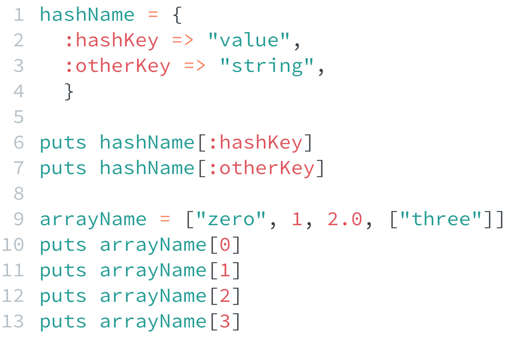
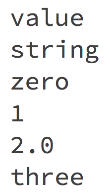

March 15, 2015
Post #4
To Hash... Or To Array...
That is the question! Let's begin with: Hash
Qualities of A Hash:
- Similar to an Array, a Hash stores objects, whether it be strings or other values.
- The information stored within a Hash is not based on any order.
- You call on the values stored within a Hash using a Key, which can be something like "hashKey" - its just a name or identifier to use for referencing.
- Because there isn't any order to the information stored in a Hash, you cannot position items, or call on them based on their position.
- An example of when you would use a Hash could be for a program created to store birthdays. If you wanted to know when your friends birthdays' occur, you can store them with their names as keys and their birthdays' as values. Presume you don't necessarily need this list in any order.
Moving On! What about: Array
Qualities of An Array:
- It is essentially a variable created to store additional variables (i.e. objects).
- An Array stores all of its information in order, with the order usually being based on when an object is added to it. However, the order can be amended using methods.
- Because the objects in an Array are positioned (i.e. they're in a specific order), we can reference them using their position in the Array.
- It should be noted that the first position is [0], and the second is [1]; the last position is [-1], and the second to last is [-2]. I think you get the idea.
- An example of when you would use an Array could be for a program created to store transactions that occur daily. Your Array could be used to store a string of text for each transaction, such as: "John Doe - $5 - Bread - 10:00am".
The first image is Ruby code, with the first block of code being a Hash, the second being an Array. The following picture is provided by the consule.

